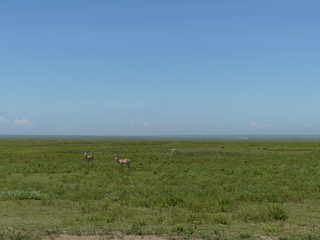

{kind=link}
{kind=link}
{kind=link}
{kind=link}
{kind=link}
{kind=link}
{kind=link}
{kind=link}
{kind=link}
{kind=link}
{kind=link}
{kind=link}
{kind=link}
{kind=link}
{kind=link}
{kind=link}
{kind=link}
{kind=link}
{kind=link}
{kind=link}
{kind=link}
Note the folks in the jeep taking pics of the cheetah.
{kind=link}
{kind=link}
CAUTION: A bit gruesome as zebra is still kicking.
|
| Mt. Meru from the hotel in Arusha |
|---|---|
|
| Myself and our terrific guide Fadhili (holding the coffee mug), and 2 camp hosts at camp in the serengeti |
| Colorful bird | |
| Black face monkey | |
| Elephant with a giant tusk | |
| Lions looking for trouble | |
| Baboon | |
| Drinking from a mudpuddle | |
| Ostriches | |
| Lazy lions in a tree. Needed full 24X zoom to get this shot | |
| Zebra in foreground with jeep and tons of migrating wildebeast in the background | |
| Vultures on a carcass | |
| Better view of the carcass | |
|  | Thompsons and Grants gazelles |
| Zebras and wildebeasts | |
| Vulture | |
| "toilet-butt" (gazelles?) with young | |
| Sunset at camp on the serengeti | |
| Brief MP4 video of lions on the road | |
| Lion and cubs | |
| Lions right on the roadside | |
| Elephants on the serengeti | |
| Cheetah on termite mound | |
| Cheetah on jeep getting a better view. I would have freaked out if I was in that jeep.
Note the folks in the jeep taking pics of the cheetah. | |
| Cheetah cubs closing in on mom's zebra kill | |
| Cheetah cubs eating zebra | |
| MP4 video of cheetahs eating a still-alive zebra.
CAUTION: A bit gruesome as zebra is still kicking. | |
| MP4 video of cheetahs eating a zebra. Not as gruesome since zebra is now dead. | |
| Lion on a rock | |
| Colorful birds | |
| Giraffe running | |
| Hippos in a river. They defecate in there and it really smelled | |
| Rhino. I think these things are pretty rare. There was a big jeep jam here with folks taking pictures | |
| Cape buffalo. Beautiful animals | |
| Huge elephant from quite a distance | |
| Lions confront cape buffalo in standoff in Ngorongoro crater--lions eventually backed off | |
| Lion roars (or yawns) |
{kind=link}
{kind=link}
{kind=link}
{kind=link}
{kind=link}
{kind=link}
{kind=link}
{kind=link}
{kind=link}